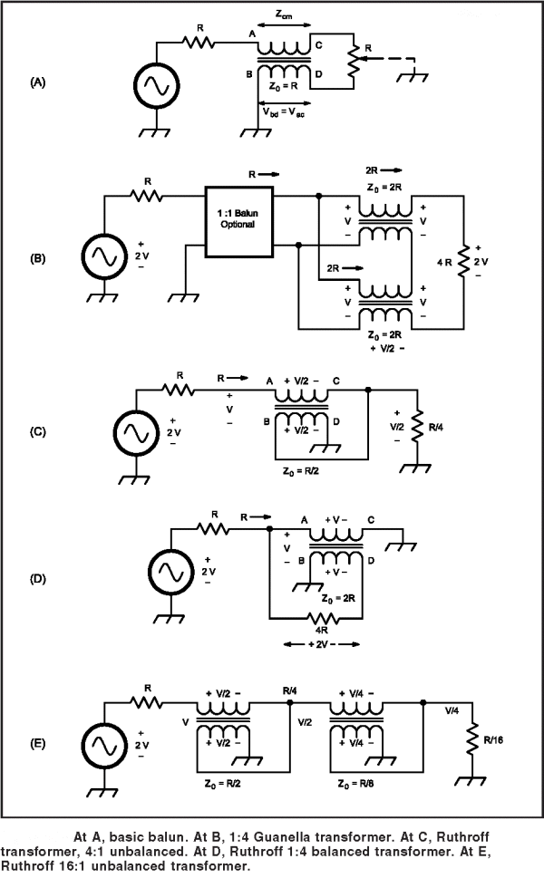

�
|
Planning a trip to Sicily? Then,
make sure you won't be feeding the Mafia!

|
|
|
Se hai un interesse scientifico in materia di fisica della
radio, visiona questo sito internet nell'ordine consigliato!
|
|
|
|
�
BALUN di ERRANTE
BalUn con terra virtuale per
dipoli & loops
A state-of-the-art high power
broadband HF balun
��
|
|
BREVETTO INDUSTRIALE
n.0001347484 (ITAPA20030019) e
BREVETTO INDUSTRIALE n.0001347486 (ITAPA20030021)
Visita www.uibm.gov.it ed immetti
Francesco Errante nel campo di ricerca per vedere tutti i miei
brevetti, o verifica direttamente sul sito dell'European Patent
Office QUI e QUI !
|
|
Immagini del BALUN con terra virtuale, 50/70
Ohm
Banda di lavoro del BALUN: da 1 a 30 MHz
Potenza RF: 2KW CW
Fai click sulle immagini per
ingrandirle
|
|
N.B. L'esemplare qui raffigurato �
disponibile in allestimenti normalizzati per:
NEW! Dipolo multibanda 225+225
Ohm - Ingresso 50 Ohm sbilanciati uscita 225+225 Ohm bilanciati
Sistema
d'antenna MULTIBANDA a 225 Ohm ;
Dipolo aperto a � onda - Ingresso 50 Ohm sbilanciati, uscita
70 Ohm bilanciati;
Dipolo ripiegato a � onda - Ingresso 50 Ohm sbilanciati,
uscita 300 Ohm bilanciati;
Dipolo a V invertita da � onda - Ingresso 50 Ohm
sbilanciati, uscita 50 Ohm bilanciati;
Deltaloop onda intera a singola spira - Ingresso 50 Ohm
sbilanciati, uscita 200 Ohm bilanciati.
Differenti valori d'impedenza o differenti terminazioni sono
disponibili solo su richiesta.
|
�
|
Il Balun con terra virtuale
per dipoli & loops : cos'�, come funziona e come si � pervenuti alla sua
realizzazione.
di Francesco Errante
Il Balun con terra virtuale, qui presentato, �
l'applicazione pratica nel campo delle radio comunicazioni in onde corte di
quanto precedentemente realizzato dell'Autore per applicazioni scientifiche.
Esso, come il suo omologo il circuito
radioelettrico per lo sdoppiamento del dipolo ripiegato a � onda, deriva,
infatti, dal circuito radioelettrico per la
soppressione di uno qualsiasi dei due rami di un dipolo aperto a �
onda .
Il balun di Errante e' essenzialmente un trasformatore elettrico
puro che nella sua versione pi� elementare ha un minimo di 3 circuiti
accordati: il circuito primario (rete LC dell'avvolgimento primario) e 2
circuiti secondari (reti LC degli avvolgimenti secondari).
Generalmente, i circuiti secondari del balun di Errante sono
identici, per essere idonei ad alimentare antenne bilanciate simmetriche.
All'occorrenza, essi possono essere anche formati per valori d'impedenza tra
di loro differenti, mantenendo, pero', costante l'angolo di sfasamento delle
terminazioni bilanciate a �90 gradi rispetto al nodo di terra virtuale.
Inoltre, come tutti i trasformatori elettrici puri, il balun di
Errante puo' essere costruito con pi� di una coppia di
secondari.
Il balun di Errante si caratterizza per NON permettere
alcuna trasformazione d'impedenza fintantocche' non si verifichi
l'adattamento d'impedenza delle proprie terminazioni (impedenza
NON-fluttuante).
I valori d'impedenza delle terminazioni del balun di Errante sono
determinate per costruzione, ne deriva che il rapporto di trasformazione e' una sua funzione e NON viceversa, diversamente da quanto avviene con tutti
gli altri arrangiamenti bal-un. Vedasi ad esempio il trasformatore di Guanella od il trasformatore di
Ruthroff che invece sono caratterizzati dall'avere un rapporto
di trasformazione fluttuante. Cio' perche' essi non sono altro che
arragiamenti di auto-trasformatori e quindi i loro circuiti d'ingresso e di
uscita sono inscindibili, con la conseguenza che ogni variazione apportata ai
loro circuiti primarii si riflette sui loro circuiti secondari.
In pratica, un balun che permette la fluttuazione dei valori d'impedenza
delle proprie terminazioni effettua la trasformazione d'impedenza all'interno
di una vasta escursione di valori d'impedenza, modificando l'impedenza della
sua terminazione d'ingresso in funzione di quella del carico e viceversa.
Quindi, supponendo di disporre di un balun del tipo Guanella con
rapporto di trasformazione 4:1, si avra' al suo ingresso un'impedenza di 75
Ohm se il carico e' da 300 Ohm, oppure un'impedenza di 50 Ohm se il carico e
di 200 Ohm e cosi' via. Questo non puo' invece avvenire con l'impiego di un balun
del tipo Errante, perche' i valori d'impedenza di ognuna delle sue
terminazioni sono proprieta' fisse delle stesse e non variano al variare dei
valori di impedenza dei circuiti (antenne o linee) ad essi collegati.
Limitando le impedenze dei sistemi linea-carico ai soli valori imposti, consente
di inibire sia le linee che i carichi (antenne) dal prestarsi a
risonanze indesiderate, generalmente frutto di risonanze armoniche,
molto spesso derivanti dalla presenza di pi� carichi sullo stesso punto di
alimentazione che generano percorsi alternativi per la RF.
(vedasi dipoli o monopoli multipli, antenne a ventaglio e cosi via).
Questo e' un particolare da non sottovalutare, non solo in fase di trasmissione
ma anche e soprattutto in fase di ricezione. L'impiego di un balun ad impedenze NON fluttuanti,
infatti, introduce un'altissima reiezione ai segnali radio interferenti provenienti da fonti
al di fuori delle bande di spettro radio per cui un'antenna e' destinata. Da qui
ne deriva un'eccellente stabilita' e selettivita' dei sistemi di linea e
d'antenna che impiegano i balun di Errante
Un balun con terra virtuale rappresenta il dispositivo ideale per la corretta
alimentazione di dipoli e loops. Esso provvede contemporaneamente ad:
1) adattare l'impedenza della sorgente RF al carico, mediante trasformazione
a perdite irrisorie;
2) ottenere due porzioni identiche del segnale RF ad esso fornito e dotate
del corretto sfasamento tra di esse per la naturale alimentazione dei dipoli
aperti o ripiegati (ivi incluse le antenne del tipo deltaloop);
3) ottenere un nodo di terra virtuale per la corretta polarizzazione della
sua porta sbilanciata;
4) ottenere un percorso di terra comune per la dissipazione delle tenzioni
indotte dai fenomeni elettrostatici;
5) ottenere un elevato disaccoppiamento tra i due rami bilanciati.
Lo schema elettrico del balun con terra virtuale � riportato qu�
appresso.
Il balun con terra virtuale � alloggiato
all'interno di un contenitore metallico a doppio corpo dotato di un vano a
tenuta stagna per la circuiteria del balun e di un secondo vano per la
protezione dei connettori della linea coassiale. Detto contenitore metallico
oltrecch� assicurare un'elevata robustezza meccanica ed una totale stabilit�
nei confronti degli agenti atmosferici assolve anche alla funzione di
conduttore elettrico generale per il riferimento al nodo di terra virtuale ed
assicura un completo schermaggio elettrostatico della circuiteria del balun
stesso.
Radiondistics, parimenti, rivendica l'originalita' delle soluzioni
elettromeccaniche adottate.
Vantaggi operativi:
|
a. Il balun con terra virtuale permette all'antenna
di operare con perdite ridotte rispetto alla stessa antenna alimentata
con balun convenzionali.
b. Il balun con terra virtuale permette all'antenna di esibire una
larghezza di banda caratteristica pi� ampia rispetto alla stessa
antenna alimentata con balun convenzionali.
c. Il balun con terra virtuale permette all'antenna di esibire
un'elevata immunit� agli effetti delle capacit� parassite.
d. Il balun con terra virtuale permette all'antenna di esibire un'alta
stabilit� del punto di risonanza indipendentemente dalla sua
inclinazione e distanza dal suolo.
e. Il balun con terra virtuale permette all'antenna di esibire un
maggiore reiezione ai segnali fuori-banda, rispetto alla stessa
alimentata con balun convenzionali.
f. Il balun con terra virtuale permette all'antenna di esibire un
maggiore immunita' alle cariche ed ai rumori di natura elettrostatica
rispetto alla stessa alimentata con balun convenzionali.
g. Il balun con terra virtuale, grazie ai fenomeni di interferenza costruttiva e distruttiva
che hanno luogo nel trasformatore, permette all'antenna a dipolo di esibire un
diagramma di radiazione/ricezione (reiezione dei segnali fuori dall'orientamento dell'asse del fascio)
pi� netto e definito rispetto alla stessa alimentata con balun convenzionali.
h. Il balun con terra virtuale permette all'antenna di essere
installata in tempi molto pi� rapidi di quanto richiesto dalle stessa
se alimentata attraverso un balun convenzionale.
i. Il balun con terra virtuale migliora la compatibilita' ambientale
(EMC & TVI) delle antenne previamente utilizzate con baluns
convenzionali.
|
Applicazioni:
|
a. STAZIONI RADIO TERRESTRI FISSE E MOBILI PER
IMPIEGHI CIVILI E MILITARI.
b. INSTALLAZIONI RAPIDE, SEGRETE e STRATEGICHE. �
c. SERVIZI DI LOCALIZZAZIONE e SALVATAGGIO.
d. RADIO COMUNICAZIONI NAVALI (SHIP to SHIP & SHIP to SHORE).
e. IMPIEGHI RADIOAMATORIALI DXing ed installazioni su propieta' condominiali.
f. ELEMENTI DI CORTINE d'ANTENNE OMOGENEE
g. LABORATORI di FISICA delle RADIO ONDE.
Vedi anche: Balun rosmetrico
�
|
|
|
Prezzo al pubblico:
Euro 250,00 +IVA e spese di spedizione.
N.B. Il prezzo della versione 50/225+225 � di Euro 500,00 +IVA e spese di
spedizione.
RADIONDISTICS garantisce a vita i propri
prodotti.
|
|
|
Schemi elettrici del balun di
Guanella e quello di Ruthroff
|
|

|
|
|
|
|
|
|
�
Tutti i concetti, metodi, disegni e dispositivi presentati in questo sito internet
sono opere originali di FRANCESCO ERRANTE.
Brevetti & Copyright © 1985- di FRANCESCO ERRANTE.
Questo materiale � protetto dalle leggi sul Diritto d'Autore e sulla
propriet� intellettuale.
Riproduzione, anche parziale, consentita solo previo consenso scritto
dell'Autore.
La detenzione e l'uso di questi documenti, ottenuti mediante qualsiasi mezzo sia esso elettronico,
informatico, telematico, fotografico o meccanico � consentito esclusivamente per uso personale.
Tutti i diritti riservati.

|
|
�
All rights reserved. Copyright © 1985- Francesco Errante
www.Radiondistics.com - Tel.(+39) 339.180.1313
|
|